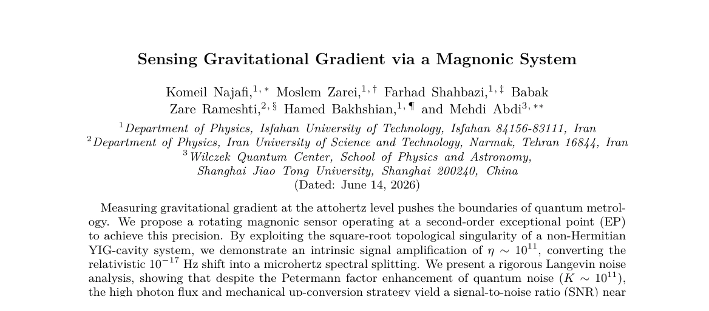
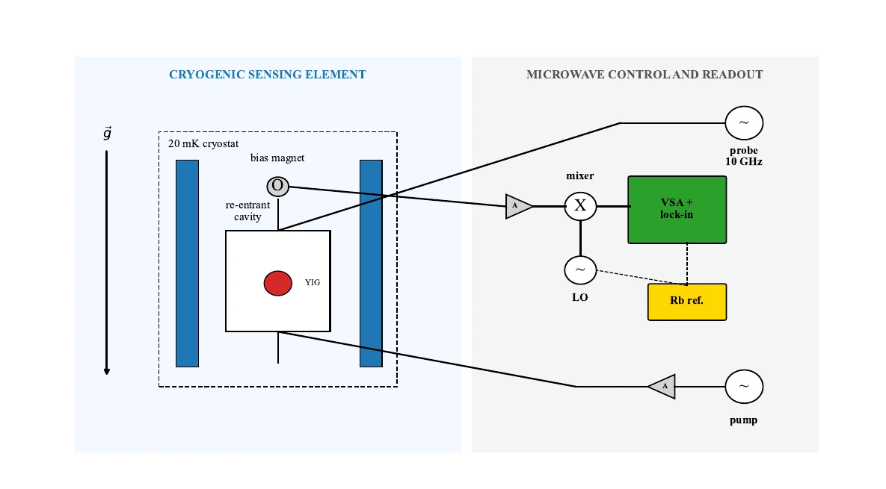

Gravity modifies the magnon resonance
A gravity gradient creates an extremely small perturbation to the spin system in the YIG sample. In the model, this appears as a shift of the magnon resonance frequency.
Thesis and manuscript draft
We propose a new method for gravity gradient sensing based on magnons in a YIG sphere coupled to a microwave cavity. The present work is theoretical, but it is built around a concrete experimental architecture and a measurable microwave output.

Proposed method
A gravity gradient creates an extremely small perturbation to the spin system in the YIG sample. In the model, this appears as a shift of the magnon resonance frequency.
The YIG sphere sits inside a microwave cavity. Magnons and cavity photons hybridize, so the magnon shift can be accessed through the cavity transmission or reflection spectrum.
Gain assisted non Hermitian dynamics bring the coupled modes close to a second order exceptional point. Near this point, a small perturbation produces a square root spectral splitting rather than an ordinary linear shift.
The draft uses quantum Langevin equations and input output theory to evaluate the output spectrum, Petermann factor noise, photon shot noise, and the final signal to noise ratio.
Theory connected to experiment
The proposed sensor is described as a realistic chain of experimental components: a YIG crystal, a two post re entrant microwave cavity, a bias magnet, a cryogenic environment, a microwave probe, a pump for effective magnon gain, a mixer, a stable local oscillator, and phase sensitive readout.
The theory is used to answer practical questions. Where does the gravity induced shift enter? How can the mode splitting be measured? How much amplification is available? What noise penalty appears near the exceptional point? How long must the signal be integrated?
The present draft estimates an intrinsic response enhancement on the order of 1011, converting a very small relativistic shift into a microhertz scale spectral splitting. It also includes the associated excess noise and estimates a signal to noise ratio close to one for a 1000 second integration under the selected parameters.

Research contribution
The work maps a gravity gradient onto the resonance of a collective spin excitation in a YIG sample, creating a spectroscopic sensing route.
The proposal uses a gain assisted cavity magnon system at a second order exceptional point to convert the weak perturbation into a larger hybrid mode splitting.
The manuscript does not treat amplification alone as sensitivity. It explicitly includes Petermann factor enhancement, shot noise, thermal noise, and a signal to noise estimate.
Supervisors and coauthors
Each Scholar link opens the relevant Google Scholar profile or an author search where a verified profile was not available.
Isfahan University of Technology. Supervisor of my thesis and a coauthor of the manuscript.
Professor at Isfahan University of Technology. Advisor of my thesis and a coauthor of the manuscript.
Iran University of Science and Technology. Researcher in cavity magnonics and related quantum systems.
Associate Professor at Isfahan University of Technology, with research in experimental high energy physics and the CMS experiment at CERN.
Wilczek Quantum Center, Shanghai Jiao Tong University. Researcher in quantum optics and quantum information.